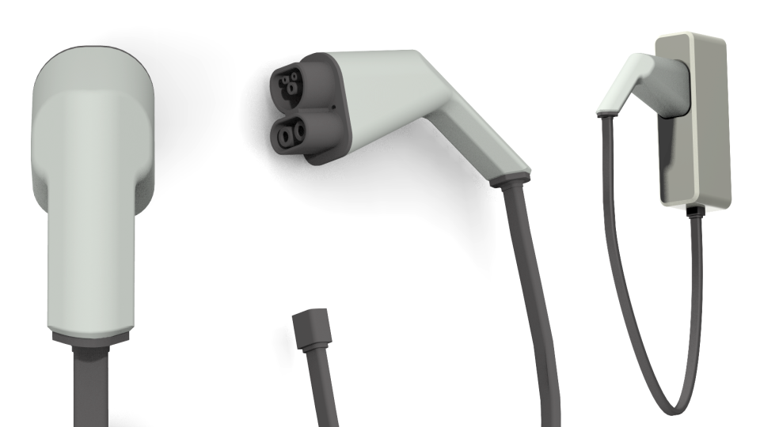

CODING PROJECTS
MECHATRONIC PROJECTS

CAD PROJECTS
SMEG HAND MIXER

SURFACE JUG

ELECTRIC VEHICLE CHARGER

Hello!
I'm Filippa Strandlund, a mechatronics engineer driven by a deep passion for coding and design. My studies at Lund University and New York University have cultivated a diverse skill set for software development, enriched with hands-on mechatronics experience.
My creative journey, which began with visual arts in high school and continued through design-focused courses at university, intertwines with my technical skills. This has led to projects such as developing machine learning-based applications like an ASL tutor and tackling engineering challenges like an embedded servo system. My portfolio reflects my dedication to merging precise engineering with innovative and artistic design, evident in both software solutions and CAD designs.

Exchange Studies
M.Sc. Mechatronics & B.Sc. Mechanical Engineering